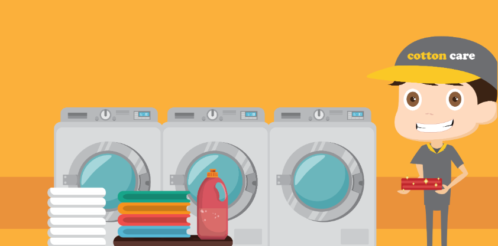

<ion-app>
  <ion-split-pane>
    <ion-menu type="overlay">
      <ion-header>
        <ion-toolbar class="menutoolbar">
          <ion-title >
             
          </ion-title>
        </ion-toolbar>
        <!-- <ion-toolbar >
			    
        </ion-toolbar> -->
      </ion-header>
      <ion-content >
        
        <ion-list >
          <ion-menu-toggle auto-hide="false" *ngFor="let p of appPages">
            <ion-item [routerDirection]="'root'" [routerLink]="[p.url]">
              <ion-icon slot="start" [name]="p.icon"></ion-icon>
              <ion-label >
                {{p.title}}
              </ion-label>
            </ion-item>
          </ion-menu-toggle>
        </ion-list>

      </ion-content>
      <ion-footer class="menutoolbar">
        <ion-toolbar >
          <ion-button size="small" position="buttom" class="ion-float-left" color="clear" href="login">Login</ion-button>
          <ion-button size="small" position="buttom" class="ion-float-right" color="clear" href="newregister">register</ion-button>
        </ion-toolbar>
      </ion-footer>
    </ion-menu>
    <ion-router-outlet main></ion-router-outlet>
  </ion-split-pane>
</ion-app>


